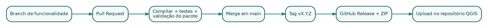

6 Parte IV - Desenvolvimento avançado
6.1 17. Compatibilidade QGIS 3/4 e Qt 5/6
A transição para Qt 6 introduziu enums scoped. Código antigo:
Qt.RightDockWidgetArea
QMessageBox.Yes
QgsWkbTypes.PointGeometryCódigo Qt 6:
Qt.DockWidgetArea.RightDockWidgetArea
QMessageBox.StandardButton.Yes
QgsWkbTypes.GeometryType.PointGeometryPara suportar ambas as gerações, resolva em tempo de execução:
def compat_enum(container, scoped_container, member, legacy):
scoped = getattr(container, scoped_container, None)
if scoped is not None:
return getattr(scoped, member)
return getattr(container, legacy)
RIGHT_DOCK_AREA = compat_enum(
Qt,
"DockWidgetArea",
"RightDockWidgetArea",
"RightDockWidgetArea",
)6.1.1 17.1 Importações
Use sempre:
from qgis.PyQt.QtCore import Qt
from qgis.PyQt.QtWidgets import QActionEvite importar directamente de PyQt5 ou PyQt6. O módulo qgis.PyQt selecciona a implementação fornecida pelo QGIS.
6.1.2 17.2 Testes estáticos de enums
Um teste simples pode analisar AST e proibir acessos antigos no código executável. AST é superior à procura textual porque comentários podem mencionar nomes antigos sem representar erro.
6.2 18. Segurança
6.2.1 18.1 Subprocessos
Quando um plugin chama GDAL ou outra ferramenta:
- localize executáveis confiáveis;
- resolva caminhos absolutos;
- valide cada argumento;
- passe argumentos numa lista ou tuplo;
- use
shell=False; - rejeite bytes nulos;
- não construa comandos com concatenação de entrada do utilizador;
- limite o ambiente quando necessário;
- capture stdout, stderr e código de saída.
process = subprocess.Popen(
validated_command,
shell=False,
stdout=subprocess.PIPE,
stderr=subprocess.PIPE,
text=True,
encoding="utf-8",
errors="replace",
)No GPX Batch Converter, apenas os caminhos absolutos detectados para ogr2ogr e ogrinfo são permitidos.
6.2.2 18.2 SQL, expressões e nomes
Evite SQL montado dinamicamente com nomes de ficheiros. Use APIs OGR/PyQGIS, parâmetros e identificadores validados. Normalize nomes de ficheiro:
def clean_filename(name, fallback="output"):
cleaned = re.sub(r"[^\w\s-]", "", str(name), flags=re.UNICODE)
cleaned = re.sub(r"[-\s]+", "_", cleaned).strip("_")
return cleaned or fallback6.2.3 18.3 Rede
- HTTPS;
- redireccionamentos limitados;
- sem tokens em URL ou log;
- timeout;
- validação de resposta;
- cache;
- política de privacidade documentada.
6.2.4 18.4 Dados locais
Não apague ou sobrescreva sem consentimento claro. Para Shapefile, considere todos os componentes. Quando o output está aberto no QGIS, a escrita pode falhar por bloqueio; apresente instruções úteis.
6.3 19. Testes
6.3.1 19.1 Pirâmide prática
- Funções puras: nomes, validação, extensão, cache key;
- Testes de metadata e pacote;
- Testes estáticos: enums, caminhos, imports proibidos;
- Testes PyQGIS: camadas, transformações, escrita;
- Testes manuais: interface, mapa, rede e plataformas.
6.3.2 19.2 unittest
import unittest
from my_plugin.utils import clean_filename
class FilenameTests(unittest.TestCase):
def test_removes_unsupported_characters(self):
self.assertEqual(clean_filename("A/B:C"), "ABC")
def test_uses_fallback(self):
self.assertEqual(clean_filename("!!!"), "output")6.3.3 19.3 Metadata
import configparser
from pathlib import Path
PLUGIN = Path(__file__).parents[1] / "my_plugin"
parser = configparser.ConfigParser()
parser.read(PLUGIN / "metadata.txt", encoding="utf-8")
assert parser["general"]["version"] == (PLUGIN / "VERSION").read_text().strip()6.3.4 19.4 Testes do ZIP
Verifique:
- um único directório de topo;
- ficheiros obrigatórios;
- sem
__pycache__,.pyc,.git,__MACOSX; - metadata sincronizada;
- todos os recursos referenciados existem;
- tamanho aceitável.
6.4 20. Empacotamento
Estrutura correcta:
my_plugin-1.0.0.zip
└── my_plugin/
├── __init__.py
├── metadata.txt
├── plugin.py
├── LICENSE
└── ...Estrutura incorrecta:
my_plugin-1.0.0.zip
├── README.md
└── src/
└── my_plugin/Comando:
zip -qr my_plugin-1.0.0.zip my_plugin \
-x '*/__pycache__/*' '*.pyc' '.git/*'6.5 21. Git e fluxo de colaboração
Fluxo recomendado:
main
└── feature/snapping
└── Pull Request -> CI -> review -> mergeCommits devem descrever uma unidade lógica:
Add cancellable background conversion
Fix Qt 6 dock widget enum compatibility
Validate GDAL executable pathsEvite commits como update, changes ou final final.
6.5.1 21.1 Pull Request
Inclua:
- o que mudou;
- motivo;
- impacto no utilizador;
- risco e compatibilidade;
- testes realizados;
- capturas de ecrã, quando a interface mudou.
6.6 22. Integração contínua e releases

Um workflow mínimo:
name: Plugin checks
on:
push:
pull_request:
jobs:
validate:
runs-on: ubuntu-latest
steps:
- uses: actions/checkout@v4
- uses: actions/setup-python@v5
with:
python-version: "3.12"
- run: python -m compileall -q my_plugin
- run: python -m unittest discover -s tests -v
- run: |
test -f my_plugin/metadata.txt
test -f my_plugin/__init__.py
test -f my_plugin/LICENSE
- run: zip -qr my_plugin.zip my_plugin -x '*/__pycache__/*' '*.pyc'Uma release profissional:
- valida que a tag coincide com
VERSIONemetadata.txt; - executa testes;
- gera o ZIP a partir da tag;
- publica notas de versão;
- anexa o pacote;
- mantém o código da release idêntico ao repositório indicado na metadata.
GeoClick Capture adoptou este processo na versão 1.2.6.
6.7 23. Publicação no repositório oficial do QGIS
Antes do upload:
- obtenha OSGEO ID;
- confirme links de homepage, repositório e tracker;
- use licença compatível;
- inclua descrição curta em inglês;
- documente dependências;
- não inclua executáveis ou bibliotecas compiladas;
- mantenha o ZIP dentro do limite;
- verifique duplicação funcional;
- teste Windows, Linux e macOS quando possível;
- mantenha changelog e versão actualizados.
6.7.1 23.1 Aprovação
Novos plugins passam por validação automatizada e revisão. O revisor pode instalar uma amostra aleatória e verificar se o QGIS inicia sem falhar. Um traceback em initGui() é motivo suficiente para bloqueio.
6.7.2 23.2 Actualizações
Para uma nova versão:
- aumente a versão;
- actualize changelog;
- confirme links;
- execute todos os testes;
- gere o ZIP a partir do mesmo commit da release;
- carregue como nova versão do mesmo plugin.
Não altere o nome apenas por suportar uma versão nova de QGIS.
6.8 24. Tradução, acessibilidade e documentação
6.8.1 24.1 Internacionalização
Use inglês como idioma base quando pretende colaboração internacional. Prepare strings com self.tr() e ficheiros .ts/.qm para traduções.
Evite concatenar frases que dificultam tradução:
## Fraco
message = "Converted " + str(count) + " files"
## Melhor
message = self.tr("Converted {count} files").format(count=count)6.8.2 24.2 Acessibilidade
- textos claros nos botões;
- tooltips;
- ordem de tabulação lógica;
- não depender apenas da cor;
- ícones acompanhados de texto nos contextos principais;
- mensagens legíveis e copiáveis;
- atalhos configuráveis quando apropriado.
6.8.3 24.3 Documentação mínima
README:
- problema e solução;
- funcionalidades;
- instalação;
- uso;
- compatibilidade;
- limitações;
- desenvolvimento;
- como reportar erros;
- licença.
Inclua dados mínimos seguros quando ajudam a reproduzir o fluxo.